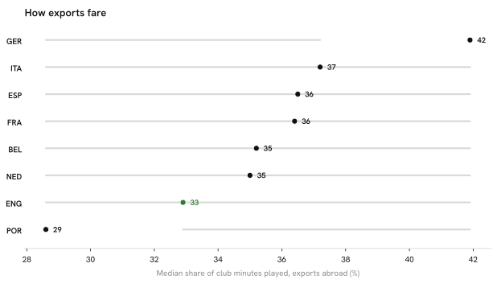

Summary · Question 7 of 14
How do they fare there?
English exports keep 33 % of their club's minutes (7th of 8).

Country-by-country figures
GER
Germany n = 262
42 %
ITA
Italy n = 201
37 %
ESP
Spain n = 464
36 %
FRA
France n = 395
36 %
BEL
Belgium n = 253
35 %
NED
Netherlands n = 372
35 %
ENG
England n = 208
33 %
POR
Portugal n = 268
29 %
How we know
As an analytics question In numbers: median share of a club's 2025/26 minutes kept by players abroad, by country of origin.
What we did We worked out what share of each club's playing time the player actually got, and where that club stood in its own league's scoring table that season.
Sources Median share of club minutes for players abroad, per country of origin (league strength: two estimates, § Methodology). Premier League is itself one of Europe's top-9 leagues; here 'abroad' means the other 8.
A federation tracking this would watch whether an export's minutes share holds after the first season, not just the median.